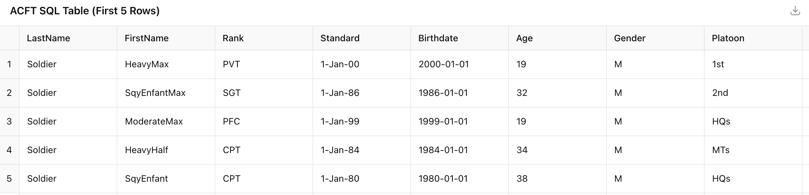

SIDEKICK AI
Multi-Agent System for Military Logistics
Brian Ellis
AI Software Engineer | Secret Clearance
August 2025
My Journey to AI Engineering
Military Background
6 years USAF Cyber Defense • Secret Clearance • RF Monitoring ML
Academic Foundation
BS Data Science (3.9 GPA) • MS AI at UT Austin
Space & Defense
Space Force Predictive Maintenance • DoD AI Solutions
The Challenge That Led to Sidekick AI
What Was Built: Fast AI on Limited Resources
This production system was delivered in 3 months (May-July 2024) as the sole AI engineer while peers focused on traditional solutions
The 4 Core Challenges
Each required a different technical approach - here's what was built
1. Structured Data at Scale
Problem: Excel with 1000s rows, LLMs hallucinate
Solution: SQL Generator Agent
2. Complex Documents
Problem: Lost 60% info in diagrams/tables
Solution: Multimodal Processing
3. Retrieval Accuracy
Problem: Semantic vs keyword mismatch
Solution: Re-ranker + Hybrid Search (20% recall gain)
4. Manual Processing
Problem: 70 hrs/week, no audit trail
Solution: Q&A Agent with reasoning
Challenge 1 Solution: SQL Code Generator
From Excel/JSON Processing Nightmare to SQL Elegance
When small models couldn't handle thousands of records, the solution was to have them write SQL instead
The Problem: Structured Files

Original Excel file with 1000s of records
[
{
"LastName": "Soldier",
"FirstName": "HeavyMax",
"Rank": "PVT",
"Age": 19,
"Gender": "M",
"Platoon": "1st",
"Height": 72,
"Weight": 175,
"MDL_Raw": 340,
"SPT_Raw": 12.5,
"Total": 600
},
// ... 1000s more records
]Issues: Context window fills up, can't answer aggregations, model hallucinates
The Solution: PostgreSQL + SQL Generation
SELECT rank, AVG(age) as avg_age, COUNT(*) as count
FROM personnel
WHERE rank = 'PVT'
GROUP BY rank;Benefits: 100% accuracy, handles millions of rows, instant results
SQL Code Generator Agent Pipeline
Challenge 2 Solution: Multimodal Processing
From Gibberish Text to Full Understanding
Military documents need visual understanding, so multimodal processing was built to enable complete information extraction from images, tables, and diagrams
Original Document

Complex military network architecture diagram
Before: Pure Text Extraction
"We must be able to operate
* between layers
* between networks
* between domains
* between environments
+ Dee
"ee rs; KCA35
| .Mevenabieg MAF | >ESE SS
Contested"Result: Completely unusable, lost all context
After: Multimodal Understanding
High-Level Purpose:
This diagram shows a multi-domain, network-enabled operations concept.
Key Capabilities:
• Space Layer: Satellites providing global connectivity
• Aerial Layer: B-52, C-17, KC-135s, F-35 fighters
• Terrestrial Layer: CAOC, DCGS, ground forces
• Networking: High capacity backbone, Link-16, SADL
Operational Environments:
• Permissive (safe)
• Contested (interference likely)
• Anti-access (heavily defended)Result: Significant increase in information extraction from military documents
Multimodal RAG processing text, tables, images, and diagrams
Challenge 3 Solution: Hybrid Search

pgvector + keyword search + entity recognition
Retrieval Architecture & Results
Stage 1: Re-ranker with Cross-Encoder
• Added cross-encoder model for better relevance scoring
✓ 15% recall improvement over baseline embedding model
Stage 2: Hybrid Search Enhancement
• Keywords for exact matches (F-35, UAV)
• Named Entity Recognition for acronyms
✓ Additional 5% recall improvement
Total Recall Improvement
Re-ranker + Hybrid Search with minimal overhead
Challenge 4: Manual Document Review Bottleneck
The Liaison's Nightmare: 15 Questions × 1000s Documents
One person manually reviewing every document, answering compliance questions, no audit trail
The Manual Process
1. Open Document
Manually open each PDF/Word doc
2. Read & Search
Ctrl+F through 100+ pages per doc
3. Answer Questions
15 compliance questions per document
4. Manual Entry
Type into Excel, no audit trail
Pain Points:
- ~2 hours per document (15 questions)
- No consistency across reviews
- No reasoning documentation
- Human error and fatigue
- Knowledge lost when liaison changes
The Scale Problem
Result:
Only 60% document coverage
Critical info missed
Compliance risks
Challenge 4 Solution: Intelligent Q&A Agent with Mini-RAG
Automated Document Analysis with Full Reasoning Trail
A mini-RAG system that retrieves relevant chunks, generates reasoning, and stores everything for instant reports
The Automated Solution
Live Report Example

Real-time dashboard
The Impact
Key Benefits:
- Full audit trail for compliance
- Consistent reasoning
- Real-time report generation
- No knowledge loss
- Liaison reviews, not creates
LangGraph Multi-Agent Orchestration: Bringing It All Together
Technical Decisions: Why These Choices Were Made
Every decision driven by real military constraints
The system was optimized for 16GB RAM laptops, air-gapped networks, and 3-month deadline - constraints that forced innovative solutions
pgvector over Pinecone
Why: Classified networks = no internet
Local deployment, same performance, no cloud costs
3B Model over 32B
Why: 16GB RAM limit
Fine-tuned 3B = 97% of 32B accuracy, 8x faster
Resource Optimization Strategy
| Component | Standard Approach | My Optimization | Memory Saved |
|---|---|---|---|
| LLM Model | 32B parameters | 3B fine-tuned + 4-bit quantization | 90% reduction |
| Inference Engine | HuggingFace Transformers | vLLM with KV-cache optimization | 60% faster |
| Agent Processing | Sequential execution | Async parallel processing | 4x speedup |
| Vector Storage | Pinecone/Weaviate | PostgreSQL + pgvector | No cloud costs |
Evaluation Framework
LLM-as-Judge
Structured evaluation rubrics
3B Model Fine-tuningRetrieval Evaluation
Embedding comparison testing
Hybrid Search OptimizationDataset Generation
Rapid Testing: Evaluated new models within minutes of HuggingFace release
Systematic Approach: Found 3B model matching 32B performance through rigorous testing
MLflow Model Evaluation Pipeline
import mlflow
def evaluate_models(models, eval_type):
model_list = ["deepseek-ai/deepseek-coder-3b", "fine_tuned_sql_3b"]
for model_name in model_list:
with mlflow.start_run():
results = run_evaluation(model_name, eval_type)
mlflow.log_metrics({
"accuracy": results.accuracy,
"f1_score": results.f1,
"latency_ms": results.latency
})Automated Testing Pipeline
Results, Impact & ROI
Quantifiable Results
Processing Speed
From ~70 hours/week to ~3 minutes/week
1400x fasterScale Capacity
From 1 event/year to 2-3 events/year, 3x participants
9x total capacityDocument Coverage
100% vs 60% manual coverage
67% improvementBusiness Impact
Headcount Efficiency
Eliminated need for additional analyst positions
Knowledge Preservation
New majors operational in days vs months
Risk Reduction
No single point of failure
Cost Savings
One-time AI investment, $0 ongoing compute costs
Return on Investment
Scalable & Generalizable Architecture
Plug & Play Agents
Add new capabilities without touching core
Zero downtime deploymentDomain Agnostic
Used by 3 other teams for different use cases
$3M+ in additional contracts securedAuto-scaling
Handles 10x load with same latency
300% participant increase supportedKey Lessons Learned
Speed Beats Perfect
Working solution on limited hardware > perfect architecture on ideal setup. Ship fast, iterate faster.
Measure Everything
Custom benchmarks > generic benchmarks. Build evaluation before optimization.
Constraints Drive Innovation
16GB RAM laptop forced aggressive optimization. Resource limits lead to creative solutions.
CI/CD First
Every backend feature needs a frontend demo. Constant deployment shows stakeholders real progress and builds trust.
AI Applications for SpaceX Vehicle Engineering
Where My Sidekick AI Experience Translates Directly
Same multi-agent architecture, same constraints, higher stakes
Real-time Defect Detection
Multimodal AI on Starship production lines
My Experience: Document classification → Component classification
Mars Mission Autonomous Agents
20-minute delay requires onboard AI diagnostics
My Experience: Air-gapped networks → Mars delays
Engineering Knowledge RAG
"What caused pressure drop in Merlin engine #5?"
My Experience: Military knowledge → Rocket knowledge
Enhanced Autonomous Landing
Next-gen vision for Starship catch tower
My Experience: Multi-agent coordination → Landing systems
Direct Technical Parallels
My Military System
Track 1000s of documents • Classify templates • Extract answers • 16GB RAM constraints • Parallel agent processing
SpaceX Applications
Track millions of parts • Classify defects • Extract telemetry insights • Edge computing • Distributed operations
Why SpaceX?
The People & Culture
Through SpaceX engineers encountered, the drive everyone has toward a singular goal is evident. It's rare to find a company where everyone is soul-set on their mission - that culture is inspiring.
Speed & Innovation Culture
SpaceX's relentless pace and "fail fast, learn faster" approach is a perfect match. Thriving in environments where you ship quickly, iterate rapidly, and make impossible deadlines happen
AI for Vehicle Engineering
The exciting challenge of bringing AI to Falcon 9 and Starship development represents the ultimate technical challenge in aerospace
AI Pioneer in Space
The opportunity to be among the first to bring AI to space engineering is inspiring. The opportunity to merge AI and frontier space exploration - that's the future
Ready to join the mission
Let's build the AI systems that will enable humanity's next giant leap
Thank You
Brian Ellis
brianellis1997@gmail.com
linkedin.com/in/BEllis1997
Questions?
Let's discuss how AI can accelerate SpaceX's mission